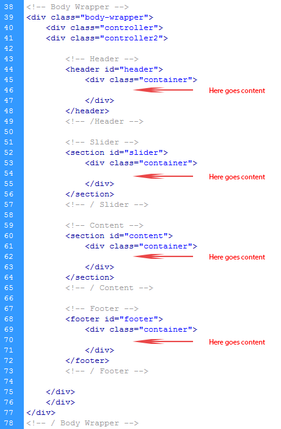
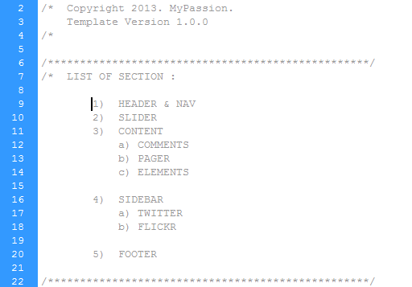

The template includes 6 html files. This theme is a flexible layout with max 4 column. All of the information within the main content area is nested within a div with a class of "body-wrapper". You have to open index page in order to change it. Here is the general structure:
If you would like to edit the color, font, or style of any elements in this template, you could do by using "Inspect Element" on Chrome, Safari and Opera(press right click on browser ). On Mozilla, you have to install firebug(firefox add-on). It is really powerful tool to work with html and css codes
I'm using 9 CSS files in this theme. The first file (style.css) contains all of the specific stylings for the page. The file is separated into sections using:
If you would like to edit a specific section of the site, simply find the appropriate label in the CSS file, and then scroll down until you find the appropriate style that needs to be edited.
Other CSS files:
- base.css - includes common styles
- 960.css - includes column styles
- superfish.css - for submenu
- ui.css
- flexslider.css - for flexsible slider
- devices/1000.css - styles for sreen size less than 960px
- devices/767.css - styles for sreen size less than 768px
- devices/479.css - styles for sreen size less than 480px
All call actions are run in mypassion.js
Attention : If you romove any of javascripts, please don't forget to remove js code call action that belongs to removed js from mypassion.js . Otherwise your site works inproperly
Other JavaScript files:
- mypassion.js - includes call actions
- html5.js - used for IE
- jquery.js
- easing.min.js
- 1.8.2.min.js - minimal jQuery library
- jflickrfeed.min.js - for flickr widget
- ui.js
- jtwt.min.js - for Twitter widget
- customM.js - for HTML5 tags
- superfish.js - for submenu
- mobilemenu.js - for screen show effects
- carouFredSel.js - for carousel slider
I've included 7 psd files with this theme:
- Index
- Index Black
- Sub Menu
- News Details
- Reviews
- Contact
- Features
If you'd like to change the color of the theme, you can use these psd files.
I've used the following images, icons or other files as listed.
- Icons - These Icons by fontello.com. Free for Commercial Use.
- Images - from internet and licenced under creative commons
- Font - Google Web Font "MerriWheather Sans"
Important: Open plugin/sendmail.php file and change email in line 3.
You can find other texts which belong to contact form.